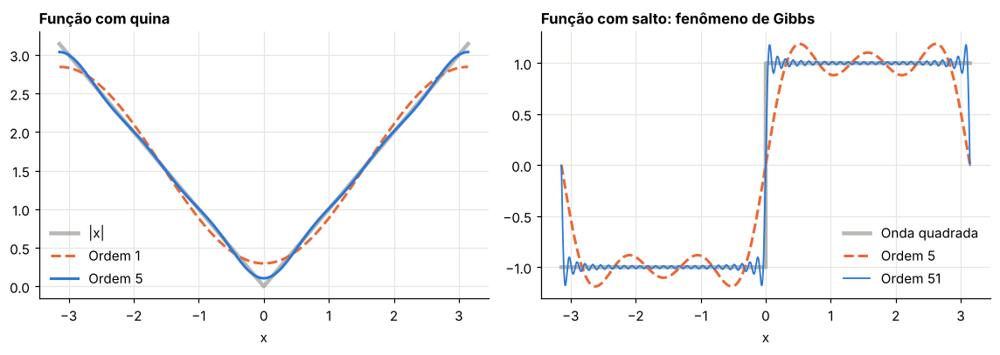
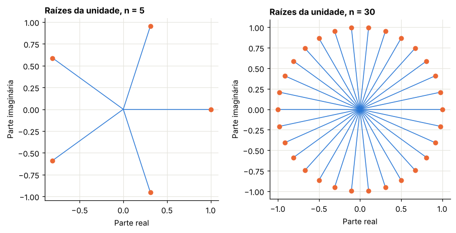
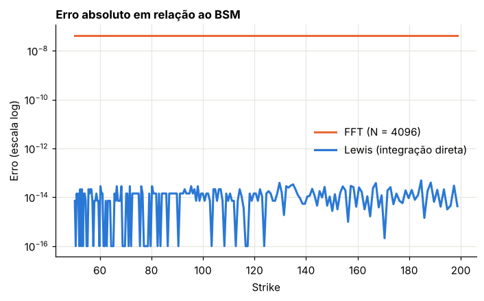

Módulo 8 — Fourier II: Carr-Madan, FFT e convolução#
Curso: Derivativos com Python, a partir de Derivatives Analytics with Python (Y. Hilpisch, Wiley, 2015). Este módulo cobre: seções 6.4.2 a 6.6 do livro.
O que você vai conseguir fazer ao final#
Deduzir a fórmula de Carr-Madan e ver que ela é a fórmula de Lewis em outra reta.
Escolher o parâmetro de amortecimento \(\alpha\).
Tratar opções muito fora do dinheiro com a transformada do valor no tempo.
Entender a transformada discreta, as raízes da unidade e o algoritmo FFT.
Precificar uma grade inteira de strikes com FFT, e saber quando isso compensa.
Ver a árvore binomial como uma convolução.
0. Preparação#
from time import perf_counter
import numpy as np
import pandas as pd
import matplotlib.pyplot as plt
from scipy.integrate import simpson
from scipy.interpolate import CubicSpline
from scipy.optimize import minimize_scalar
from scipy.stats import norm, poisson
from IPython.display import display
AZUL, LARANJA, VERDE, CINZA = "#2a78d6", "#eb6834", "#1baf7a", "#8a8a84"
plt.rcParams.update({
"figure.figsize": (7.2, 4.0), "figure.dpi": 110,
"axes.spines.top": False, "axes.spines.right": False,
"axes.grid": True, "grid.color": "#e6e5df", "grid.linewidth": 0.8,
"axes.axisbelow": True, "axes.titlesize": 11, "axes.titleweight": "bold",
"axes.titlelocation": "left", "lines.linewidth": 2.0, "legend.frameon": False,
"font.size": 10,
})
def f3(x):
"""Formata com três casas decimais no padrão brasileiro."""
return f"{x:,.3f}".replace(",", "§").replace(".", ",").replace("§", ".")
def tabela(df):
"""Exibe um DataFrame com os números reais em três casas decimais."""
def fmt(v):
if isinstance(v, (float, np.floating)):
return "n/d" if np.isnan(v) else f3(v)
return v
display(df.map(fmt))
_checks = {"n": 0}
def ok(condicao, mensagem):
"""Verificação do laboratório: interrompe o notebook se a conta não fechar."""
assert bool(condicao), f"FALHOU: {mensagem}"
_checks["n"] += 1
print(f"OK — {mensagem}")
def bsm(S, K, T, r, sig, tipo="call"):
d1 = (np.log(S / K) + (r + 0.5 * sig**2) * T) / (sig * np.sqrt(T))
d2 = d1 - sig * np.sqrt(T)
if tipo == "call":
return S * norm.cdf(d1) - K * np.exp(-r * T) * norm.cdf(d2)
return K * np.exp(-r * T) * norm.cdf(-d2) - S * norm.cdf(-d1)
def cf_bsm(u, T, sigma):
"""Função característica de X_T, parte martingale do log-retorno."""
return np.exp(-0.5 * sigma**2 * T * (1j * u + u**2))
def cf_merton(u, T, sigma, lam, mu, delta):
omega = -0.5 * sigma**2 - lam * (np.exp(mu + 0.5 * delta**2) - 1)
return np.exp(T * (1j * u * omega - 0.5 * sigma**2 * u**2 + lam * (np.exp(1j * u * mu - 0.5 * u**2 * delta**2) - 1)))
def lewis(S, K, T, r, cf, U, n):
K = np.atleast_1d(np.asarray(K, float))
k = np.log(S / K) + r * T
z = np.linspace(0.0, U, n)
h = np.exp(1j * z * k[:, None]) * cf(z - 0.5j)
return S - np.sqrt(S * K) * np.exp(-0.5 * r * T) / np.pi * simpson(h.real / (z**2 + 0.25), x=z, axis=1)
S0, K0, T0, r0, s0 = 100.0, 100.0, 1.0, 0.05, 0.20
print("Ambiente pronto. Call BSM:", f3(float(bsm(S0, K0, T0, r0, s0))))
Ambiente pronto. Call BSM: 10,451
1. A abordagem de Carr-Madan#
Livro: §6.4.2
1.1 Mudança de ponto de vista#
Lewis transformou o payoff em relação ao log-preço. Carr e Madan (1999) transformam o preço da opção em relação ao log-strike \(k = \ln K\). Se a integral for sobre os strikes, a inversão entrega o preço para muitos strikes simultaneamente, e é isso que permitirá usar a FFT.
1.2 O problema da integrabilidade#
Quando \(k \to -\infty\), a call tende a \(S_0\), e não a zero. A função \(C(k)\) não é integrável. A solução é amortecer:
1.3 Dedução#
Seja \(s = \ln S_T\) e \(q\) sua densidade. A transformada de \(c\) é
Passo 1: trocar a ordem (Fubini). A região \(\{s > k\}\) equivale a \(k \in (-\infty, s)\):
Passo 2: integrar em \(k\). Como \(\alpha > 0\), o limite inferior anula:
Passo 3: reconhecer a função característica. Note que \(e^{(iv+\alpha+1)s} = e^{i(v-(\alpha+1)i)s}\). Multiplicando o denominador:
Passo 4: inverter. Como \(C(k)\) é real, a transformada satisfaz \(\psi(-v) = \overline{\psi(v)}\), e
(O livro omite o \(\text{Re}\) na equação (6.6), mas ele é necessário.)
1.4 Quem é Carr-Madan, em relação a Lewis?#
Observe o argumento de \(\phi\): \(v - (\alpha+1)i\). Compare com a integral de Lewis, \(\phi(-u)\) em \(u = z + iu_i\), com \(u_i > 1\). Fazendo \(u = -v + i(\alpha+1)\), é a mesma integral, numa reta com \(u_i = \alpha + 1\). Carr-Madan é a fórmula original de Lewis antes de atravessar o polo em \(u = i\), e com um nome diferente para \(u_i\).
1.5 O parâmetro \(\alpha\)#
Há duas restrições.
Limite superior: \(\phi_s(v - (\alpha+1)i)\) precisa existir, ou seja, \(\mathbb{E}[S_T^{\alpha+1}] < \infty\). Em Heston, o momento pode explodir.
Precisão: \(\alpha\) pequeno deixa o integrando próximo do polo em \(v = 0\); \(\alpha\) grande amplifica \(e^{-\alpha k}\).
Carr e Madan sugerem algo em torno de \(\tfrac14\) do limite; o livro usa \(\alpha = 1{,}5\).
Laboratório 1.1 — Carr-Madan em uma reta só#
def carr_madan(S, K, T, r, cf, alpha, U=400.0, n=40001):
"""Carr-Madan com integração direta. cf é a função característica de X_T."""
K = np.atleast_1d(np.asarray(K, float))
k = np.log(K / S)
v = np.linspace(0.0, U, n)
w = v - (alpha + 1) * 1j
fi = np.exp(1j * w * r * T) * cf(w)
psi = np.exp(-r * T) * fi / (alpha**2 + alpha - v**2 + 1j * (2 * alpha + 1) * v)
return S * np.exp(-alpha * k) / np.pi * simpson((np.exp(-1j * v * k[:, None]) * psi).real, x=v, axis=1)
Kt = np.array([80.0, 100.0, 120.0])
ref = bsm(S0, Kt, T0, r0, s0)
cf_ = lambda u: cf_bsm(u, T0, s0)
linhas = []
for al in [0.1, 0.25, 0.5, 1.0, 1.5, 3.0, 6.0, 12.0, 25.0]:
v = carr_madan(S0, Kt, T0, r0, cf_, al, U=80.0, n=1601)
linhas.append({"α": al, "Erro K=80 (×10⁶)": abs(v[0] - ref[0]) * 1e6, "Erro K=100 (×10⁶)": abs(v[1] - ref[1]) * 1e6, "Erro K=120 (×10⁶)": abs(v[2] - ref[2]) * 1e6})
al_t = pd.DataFrame(linhas)
tabela(al_t)
v_fina = carr_madan(S0, Kt, T0, r0, cf_, 1.5)
v_lw = lewis(S0, Kt, T0, r0, cf_, 400.0, 40001)
print("Carr-Madan (α = 1,5):", [f3(float(x)) for x in v_fina], "| Lewis:", [f3(float(x)) for x in v_lw])
ok(np.max(np.abs(v_fina - ref)) < 1e-9 and np.max(np.abs(v_lw - ref)) < 1e-9, "Carr-Madan e Lewis coincidem com o BSM")
ok(al_t["Erro K=100 (×10⁶)"].iloc[0] > 10 * al_t["Erro K=100 (×10⁶)"].iloc[4], "α muito pequeno aumenta o erro, com a mesma malha")
ok(al_t["Erro K=100 (×10⁶)"].iloc[-1] > 10 * al_t["Erro K=100 (×10⁶)"].iloc[4], "α muito grande também aumenta o erro")
| α | Erro K=80 (×10⁶) | Erro K=100 (×10⁶) | Erro K=120 (×10⁶) | |
|---|---|---|---|---|
| 0 | 0,100 | 61.899,573 | 61.899,573 | 61.899,573 |
| 1 | 0,250 | 5,023 | 5,023 | 5,023 |
| 2 | 0,500 | 0,000 | 0,000 | 0,000 |
| 3 | 1,000 | 0,000 | 0,000 | 0,000 |
| 4 | 1,500 | 0,000 | 0,000 | 0,000 |
| 5 | 3,000 | 0,000 | 0,000 | 0,000 |
| 6 | 6,000 | 0,000 | 0,000 | 0,000 |
| 7 | 12,000 | 0,000 | 0,000 | 0,000 |
| 8 | 25,000 | 0,001 | 0,000 | 0,000 |
Carr-Madan (α = 1,5): ['24,589', '10,451', '3,247'] | Lewis: ['24,589', '10,451', '3,247']
OK — Carr-Madan e Lewis coincidem com o BSM
OK — α muito pequeno aumenta o erro, com a mesma malha
OK — α muito grande também aumenta o erro
1.6 Fora do dinheiro: transformar o valor no tempo#
Vimos no Módulo 7 que uma call muito fora do dinheiro é obtida como a diferença de dois números grandes. Carr e Madan propõem transformar diretamente o valor no tempo, normalizado com \(S_0 = 1\):
Sua transformada é
Como \(z\) tem pico em \(k = 0\), um amortecimento \(\sinh(\alpha k)\) ajuda:
Mas há um custo. Os dois primeiros termos de \(\varsigma\) decaem apenas como \(1/v\), e \(\gamma\), como \(1/v^2\), mesmo que \(\phi\) caia rapidamente. Truncar a integral custa caro.
Uma alternativa simples é manter a transformada da call e escolher \(\alpha\) por strike. Lord e Kahl propõem o valor que minimiza o módulo do integrando em \(v = 0\), ou seja, que coloca a reta de integração perto do ponto de sela. Sem subtração de números grandes e sem cauda lenta.
Laboratório 1.2 — Precisão em opções muito fora do dinheiro#
Repetimos o caso difícil do Módulo 7: prazo de um mês, malha grossa (\(U = 60\)), strikes longe do dinheiro. Depois, repetimos a transformada OTM com \(U = 1.000\).
def valor_tempo(S, K, T, r, cf, alpha=1.1, U=60.0, n=2001):
"""Valor no tempo pela transformada OTM de Carr-Madan (put se K<S, call se K>S)."""
K = np.atleast_1d(np.asarray(K, float))
k = np.log(K / S)
v = np.linspace(-U, U, 2 * n - 1)
def vs(w):
w_i = w - 1j
fi = np.exp(1j * w_i * r * T) * cf(w_i)
return np.exp(-r * T) * (1 / (1 + 1j * w) - np.exp(r * T) / (1j * w) - fi / (w**2 - 1j * w))
gama = 0.5 * (vs(v - 1j * alpha) - vs(v + 1j * alpha))
integ = simpson((np.exp(-1j * v * k[:, None]) * gama).real, x=v, axis=1)
return S * integ / (2 * np.pi * np.sinh(alpha * k))
Ks = np.array([110.0, 120.0, 130.0, 140.0, 150.0])
T_o, r_o, sig_o = 1 / 12, 0.03, 0.2
cf_o = lambda u: cf_bsm(u, T_o, sig_o)
ref = bsm(100.0, Ks, T_o, r_o, sig_o)
v_lewis = lewis(100.0, Ks, T_o, r_o, cf_o, 60.0, 2001)
v_otm = valor_tempo(100.0, Ks, T_o, r_o, cf_o, U=60.0, n=2001)
v_otm_g = valor_tempo(100.0, Ks, T_o, r_o, cf_o, U=1000.0, n=100001)
def alfa_otimo(S, K, T, r, cf, a_max=500.0):
"""Escolhe α minimizando o módulo do integrando em v = 0 (Lord e Kahl)."""
k = np.log(K / S)
def objetivo(a):
w = -(a + 1) * 1j
return -a * k + np.log(np.abs(np.exp(1j * w * r * T) * cf(w))) - np.log(a**2 + a)
return minimize_scalar(objetivo, bounds=(0.1, a_max), method="bounded").x
alfas = np.array([alfa_otimo(100.0, K_, T_o, r_o, cf_o) for K_ in Ks])
v_cm_f = carr_madan(100.0, Ks, T_o, r_o, cf_o, 1.5, U=60.0, n=2001)
v_cm_o = np.array([carr_madan(100.0, K_, T_o, r_o, cf_o, a_, U=60.0, n=2001)[0] for K_, a_ in zip(Ks, alfas)])
cmp_ = pd.DataFrame({"Strike": Ks, "Preço BSM (×10⁶)": ref * 1e6, "α ótimo": alfas, "Lewis: erro relativo (%)": np.abs(v_lewis - ref) / ref * 100, "Carr-Madan α=1,5: erro (%)": np.abs(v_cm_f - ref) / ref * 100, "Carr-Madan α ótimo: erro (%)": np.abs(v_cm_o - ref) / ref * 100, "OTM, U=60: erro (%)": np.abs(v_otm - ref) / ref * 100, "OTM, U=1000: erro (%)": np.abs(v_otm_g - ref) / ref * 100})
tabela(cmp_)
ok(np.all(np.abs(v_cm_o - ref) / ref < 1e-3), "com α escolhido por strike, o erro relativo fica abaixo de 0,1% em toda a cauda")
ok(abs(v_lewis[-1] - ref[-1]) / ref[-1] > 1e4 * abs(v_cm_o[-1] - ref[-1]) / ref[-1], "no strike mais distante, o α ótimo é muito melhor que Lewis")
ok(np.all(np.abs(v_otm_g - ref) < np.abs(v_otm - ref) / 100), "a transformada OTM está certa, mas exige um limite de integração muito maior")
| Strike | Preço BSM (×10⁶) | α ótimo | Lewis: erro relativo (%) | Carr-Madan α=1,5: erro (%) | Carr-Madan α ótimo: erro (%) | OTM, U=60: erro (%) | OTM, U=1000: erro (%) | |
|---|---|---|---|---|---|---|---|---|
| 0 | 110,000 | 138.045,658 | 41,598 | 0,060 | 0,036 | 0,009 | 9,357 | 0,008 |
| 1 | 120,000 | 1.600,465 | 62,909 | 2,053 | 0,221 | 0,025 | 204,065 | 0,133 |
| 2 | 130,000 | 4,541 | 84,517 | 1.204,908 | 929,709 | 0,034 | 87.344,076 | 24,496 |
| 3 | 140,000 | 0,004 | 105,360 | 839.225,289 | 71.940,607 | 0,040 | 27.553.573,988 | 18.100,411 |
| 4 | 150,000 | 0,000 | 125,164 | 4.004.758.061,695 | 1.684.406.833,965 | 0,043 | 61.848.295.674,124 | 31.735.471,218 |
OK — com α escolhido por strike, o erro relativo fica abaixo de 0,1% em toda a cauda
OK — no strike mais distante, o α ótimo é muito melhor que Lewis
OK — a transformada OTM está certa, mas exige um limite de integração muito maior
Leitura. A coluna de \(\alpha\) fixo mostra que, com malha grossa, Carr-Madan sofre o mesmo problema de Lewis. A transformada OTM está correta, e melhora muito com \(U\), mas a cauda lenta a torna cara. A escolha de \(\alpha\) por strike é a solução mais econômica, e o \(\alpha\) ótimo cresce com a distância do strike.
2. Da integral à soma: séries de Fourier#
Livro: §6.5.1
2.1 Série de Fourier#
Uma função periódica em \([-L, L]\) se escreve como soma de oscilações:
Quando \(L \to \infty\), as frequências \(k_n = n\pi/L\) ficam cada vez mais próximas, a soma vira integral e chegamos à transformada de Fourier do Módulo 7.
Errata do livro: ao apresentar a forma complexa, o texto escreve \(e^{iux} = e^{u_rx}\cos(u_rx) + ie^{u_rx}\sin(u_ix)\). O correto é \(e^{iux} = e^{-u_ix}\big[\cos(u_rx) + i\sin(u_rx)\big]\): o fator exponencial vem da parte imaginária e o oscilador, da parte real.
2.2 Regularidade e velocidade#
A rapidez com que os coeficientes caem depende da suavidade de \(f\):
Função |
Decaimento de \(c_n\) |
|---|---|
Com salto |
\(1/n\) |
Contínua, com quina |
\(1/n^2\) |
Suave |
Mais rápido que qualquer potência |
Para \(f(x) = |x|\) em \([-\pi,\pi]\), com quina, a série é
Esse quadro explica o que vimos nas árvores (Módulo 6): payoff com quina (call) converge melhor do que payoff com salto (digital).
Laboratório 2.1 — Aproximando funções#
x = np.linspace(-np.pi, np.pi, 8001)
def serie_abs(x, n):
soma = np.full_like(x, np.pi / 2)
for m in range(1, n + 1):
soma += 2 * ((-1) ** m - 1) / (np.pi * m**2) * np.cos(m * x)
return soma
def serie_quad(x, n):
soma = np.zeros_like(x)
for m in range(1, n + 1, 2):
soma += 4 / (np.pi * m) * np.sin(m * x)
return soma
fig, (a1, a2) = plt.subplots(1, 2, figsize=(10.5, 3.8))
a1.plot(x, np.abs(x), color=CINZA, lw=3, alpha=0.6, label="|x|")
a1.plot(x, serie_abs(x, 1), color=LARANJA, ls="--", label="Ordem 1")
a1.plot(x, serie_abs(x, 5), color=AZUL, label="Ordem 5")
a1.set_title("Função com quina")
a1.set_xlabel("x")
a1.legend()
a2.plot(x, np.sign(x), color=CINZA, lw=3, alpha=0.6, label="Onda quadrada")
a2.plot(x, serie_quad(x, 5), color=LARANJA, ls="--", label="Ordem 5")
a2.plot(x, serie_quad(x, 51), color=AZUL, lw=1.2, label="Ordem 51")
a2.set_title("Função com salto: fenômeno de Gibbs")
a2.set_xlabel("x")
a2.legend(loc="lower right")
plt.tight_layout()
plt.show()
linhas = []
for n in [5, 25, 125, 625]:
e_abs = np.max(np.abs(serie_abs(x, n) - np.abs(x)))
e_q = np.max(serie_quad(x, n) - 1)
linhas.append({"Ordem": n, "Erro máximo: |x|": float(e_abs), "Pico acima de 1 na onda quadrada": float(e_q)})
s_ = pd.DataFrame(linhas)
tabela(s_)
ok(s_["Erro máximo: |x|"].iloc[-1] < s_["Erro máximo: |x|"].iloc[0] / 50, "a série converge uniformemente na função com quina")
ok(s_["Pico acima de 1 na onda quadrada"].iloc[-1] > 0.15, "na função com salto, o pico não some ao aumentar a ordem")

| Ordem | Erro máximo: |x| | Pico acima de 1 na onda quadrada | |
|---|---|---|---|
| 0 | 5 | 0,105 | 0,188 |
| 1 | 25 | 0,024 | 0,179 |
| 2 | 125 | 0,005 | 0,179 |
| 3 | 625 | 0,001 | 0,175 |
OK — a série converge uniformemente na função com quina
OK — na função com salto, o pico não some ao aumentar a ordem
3. Transformada discreta e FFT#
Livro: §6.5.2 e §6.6.3
3.1 Raízes da unidade#
Seja \(z_n = e^{-2\pi i/n}\). As potências \(z_n^0, z_n^1, \dots, z_n^{n-1}\) são \(n\) pontos igualmente espaçados no círculo unitário. Tem-se a soma geométrica:
Prova: se \(w = z_n^k \ne 1\), a soma é \((w^n - 1)/(w - 1) = 0\), pois \(w^n = 1\). Se \(w = 1\), cada termo vale 1. Essa é a ortogonalidade que faz tudo funcionar.
3.2 A DFT e sua inversa#
Dada a sequência \(a_0, \dots, a_{n-1}\), sua transformada discreta é
A prova da inversa é uma aplicação direta da ortogonalidade: substituindo \(b_k\), obtém-se \(\frac1n\sum_ja_j\sum_kz_n^{k(j-l)}\), em que a soma interna vale \(n\) se \(j = l\) e 0 se não.
Erratas do livro. (i) As somas das raízes são escritas a partir de \(j = 1\) até \(n - 1\); para valerem \(0\) ou \(n\), devem começar em \(j = 0\). (ii) A definição da inversa está sem o fator \(1/n\), indispensável, e presente implicitamente nas fórmulas seguintes. (iii) Com \(z_n = e^{-2\pi i/n}\), as potências positivas giram em sentido horário, e não anti-horário como diz o texto.
3.3 Por que é “rápida”#
A DFT direta custa \(O(n^2)\). O algoritmo de Cooley-Tukey usa \(n\) par e separa os termos pares e ímpares:
Como \(z_n^2 = z_{n/2}\), os dois somatórios são DFTs de tamanho \(n/2\). Além disso, \(z_n^{k + n/2} = -z_n^k\), de modo que a segunda metade dos resultados reutiliza os mesmos cálculos. A recursão dá \(T(n) = 2T(n/2) + O(n)\), ou seja, \(O(n\log n)\).
Laboratório 3.1 — As três coisas#
fig, eixos = plt.subplots(1, 2, figsize=(8.4, 4.2))
for ax, n in zip(eixos, [5, 30]):
z = np.exp(-2j * np.pi * np.arange(n) / n)
for p in z:
ax.plot([0, p.real], [0, p.imag], color=AZUL, lw=1)
ax.scatter(z.real, z.imag, color=LARANJA, s=30, zorder=3)
ax.set_aspect("equal")
ax.set_title(f"Raízes da unidade, n = {n}")
ax.set_xlabel("Parte real")
ax.set_ylabel("Parte imaginária")
plt.tight_layout()
plt.show()
n = 12
soma_0 = np.sum(np.exp(-2j * np.pi * 0 * np.arange(n) / n))
somas = [abs(np.sum(np.exp(-2j * np.pi * k * np.arange(n) / n))) for k in range(1, n)]
ok(abs(soma_0 - n) < 1e-12 and max(somas) < 1e-12, "ortogonalidade: a soma vale n para k = 0 e zero nos demais")
parcial = abs(np.sum(np.exp(-2j * np.pi * 1 * np.arange(1, n) / n)))
print("Soma de j = 1 a n−1, para k = 1 (como no livro):", f3(float(parcial)), "(e não 0)")
ok(abs(parcial - 1) < 1e-12, "a soma a partir de j = 1 vale 1 em módulo, e não zero")
def dft_direta(a):
n = a.size
z = np.exp(-2j * np.pi * np.arange(n)[:, None] * np.arange(n) / n)
return z @ a
def fft_recursiva(a):
n = a.size
if n == 1:
return a.copy()
pares, impares = fft_recursiva(a[::2]), fft_recursiva(a[1::2])
w = np.exp(-2j * np.pi * np.arange(n // 2) / n) * impares
return np.concatenate([pares + w, pares - w])
rng = np.random.default_rng(901)
a = rng.standard_normal(256) + 1j * rng.standard_normal(256)
ok(np.allclose(dft_direta(a), np.fft.fft(a)) and np.allclose(fft_recursiva(a), np.fft.fft(a)), "DFT direta, recursiva e numpy coincidem")
ok(np.allclose(np.fft.ifft(np.fft.fft(a)), a), "a inversa, com o fator 1/n, recupera a sequência")
ok(not np.allclose(np.fft.ifft(np.fft.fft(a)) * a.size, a), "sem o fator 1/n, a inversa não recupera a sequência")
linhas = []
for n in [256, 1024, 4096]:
a = rng.standard_normal(n) + 0j
regs = {}
for nome, f in [("Direta", dft_direta), ("Recursiva", fft_recursiva), ("numpy", np.fft.fft)]:
t0 = perf_counter()
f(a)
regs[nome] = (perf_counter() - t0) * 1e3
linhas.append({"n": n, "Direta (ms)": regs["Direta"], "FFT em Python (ms)": regs["Recursiva"], "FFT numpy (ms)": regs["numpy"]})
vel = pd.DataFrame(linhas)
tabela(vel)
ok(vel["FFT numpy (ms)"].iloc[-1] < vel["Direta (ms)"].iloc[-1] / 20, "a FFT é muito mais rápida que a DFT direta")

OK — ortogonalidade: a soma vale n para k = 0 e zero nos demais
Soma de j = 1 a n−1, para k = 1 (como no livro): 1,000 (e não 0)
OK — a soma a partir de j = 1 vale 1 em módulo, e não zero
OK — DFT direta, recursiva e numpy coincidem
OK — a inversa, com o fator 1/n, recupera a sequência
OK — sem o fator 1/n, a inversa não recupera a sequência
| n | Direta (ms) | FFT em Python (ms) | FFT numpy (ms) | |
|---|---|---|---|---|
| 0 | 256 | 1,725 | 1,078 | 0,022 |
| 1 | 1024 | 43,040 | 4,069 | 0,035 |
| 2 | 4096 | 512,657 | 16,439 | 0,073 |
OK — a FFT é muito mais rápida que a DFT direta
4. Precificando uma grade de strikes com FFT#
Livro: §6.5.2 e §6.6.1
4.1 Passo a passo#
Passo 1: discretizar a integral. Com \(v_j = \eta j\), para \(j = 0, \dots, N-1\):
Passo 2: escolher uma grade de log-strikes. \(k_u = -b + \varepsilon u\), para \(u = 0, \dots, N-1\), com \(b = \tfrac12N\varepsilon\).
Passo 3: separar o produto. \(e^{-iv_jk_u} = e^{ibv_j}\,e^{-i\varepsilon\eta ju}\).
Passo 4: forçar o formato da FFT. Para que \(e^{-i\varepsilon\eta ju} = e^{-2\pi iju/N}\), impomos
Essa é a restrição de todo o método: uma grade fina em \(v\) (preciso na integral) implica grade grossa em \(k\) (poucos strikes úteis), e vice-versa.
Passo 5: acrescentar pesos de Simpson, \(\tfrac{\eta}{3}\big(3 + (-1)^{j+1} - \delta_{j,0}\big)\), com \(j\) a partir de 0, os pesos sendo \(1, 4, 2, 4, \dots\). Resulta
4.2 Quando usar#
O atrativo é ter \(N\) preços ao custo de uma FFT. Mas, como o livro observa citando Kahl, as cotações de mercado raramente estão nos pontos da grade. Em calibração, isso acrescenta um erro de interpolação. Em geral, a integração direta (Lewis) é mais adequada; a FFT é mais útil para precificar densidades inteiras.
Laboratório 4.1 — FFT com os parâmetros do livro#
Usamos \(N = 4096\) e \(\varepsilon = 1/150\), como no livro, que relata cerca de cinco dígitos para a FFT, contra 12 da integração direta. Há uma explicação: o script do livro usa a transformada OTM quando \(S_0 < 0{,}95K\), e, como vimos, essa transformada tem cauda lenta. Com \(v_{\max} \approx 942\), o erro absoluto fica em torno de \(10^{-5}\). Aqui usamos a transformada da call em toda a grade.
def cm_fft(S, T, r, cf, alpha=1.5, N=4096, eps=1 / 150, k_ref=0.0):
"""Devolve grade de strikes e calls. k_ref coloca ln(K/S) = k_ref em u = N/2."""
eta = 2 * np.pi / (N * eps)
b = 0.5 * N * eps - k_ref
j = np.arange(N)
v = eta * j
w = v - (alpha + 1) * 1j
fi = np.exp(1j * w * r * T) * cf(w)
psi = np.exp(-r * T) * fi / (alpha**2 + alpha - v**2 + 1j * (2 * alpha + 1) * v)
peso = (3 + (-1.0) ** (j + 1) - (j == 0)) * eta / 3
y = np.fft.fft(np.exp(1j * b * v) * psi * peso).real
k = -b + eps * j
return S * np.exp(k), S * np.exp(-alpha * k) / np.pi * y
Kg, Cg = cm_fft(S0, T0, r0, lambda u: cf_bsm(u, T0, s0))
mascara = (Kg > 50) & (Kg < 200)
er_fft = np.abs(Cg[mascara] - bsm(S0, Kg[mascara], T0, r0, s0))
er_lw = np.abs(lewis(S0, Kg[mascara], T0, r0, lambda u: cf_bsm(u, T0, s0), 400.0, 40001) - bsm(S0, Kg[mascara], T0, r0, s0))
fig, ax = plt.subplots()
ax.semilogy(Kg[mascara], er_fft + 1e-16, color=LARANJA, label="FFT (N = 4096)")
ax.semilogy(Kg[mascara], er_lw + 1e-16, color=AZUL, label="Lewis (integração direta)")
ax.set_title("Erro absoluto em relação ao BSM")
ax.set_xlabel("Strike")
ax.set_ylabel("Erro (escala log)")
ax.legend()
plt.show()
print("Erro máximo FFT (×10⁶):", f3(float(er_fft.max() * 1e6)), "| Erro máximo Lewis (×10⁹):", f3(float(er_lw.max() * 1e9)))
print("Espaçamento da grade de strikes perto do dinheiro:", f3(float(Kg[2049] - Kg[2048])))
ok(er_fft.max() < 1e-6, "com a transformada da call, a FFT supera os cinco dígitos do livro")
ok(er_lw.max() < er_fft.max() / 100, "a integração direta é muito mais precisa")

Erro máximo FFT (×10⁶): 0,043 | Erro máximo Lewis (×10⁹): 0,000
Espaçamento da grade de strikes perto do dinheiro: 0,669
OK — com a transformada da call, a FFT supera os cinco dígitos do livro
OK — a integração direta é muito mais precisa
Laboratório 4.2 — Interpolação, velocidade e modelo com saltos#
K_alvo = np.array([87.3, 94.1, 101.7, 108.2, 119.9])
M76 = dict(sigma=0.15, lam=0.8, mu=-0.12, delta=0.10)
T_m, r_m = 0.5, 0.03
cf_m = lambda u: cf_merton(u, T_m, **M76)
def merton_serie(S, K, T, r, sigma, lam, mu, delta, n_max=60):
kap = np.exp(mu + 0.5 * delta**2) - 1
lq = lam * (1 + kap)
tot = 0.0
for n in range(n_max):
sn = np.sqrt(sigma**2 + n * delta**2 / T)
rn = r - lam * kap + n * np.log1p(kap) / T
tot = tot + poisson.pmf(n, lq * T) * bsm(S, K, T, rn, sn)
return tot
ref_m = merton_serie(S0, K_alvo, T_m, r_m, **M76)
Kg, Cg = cm_fft(S0, T_m, r_m, cf_m)
mask = (Kg > 40) & (Kg < 200) & (Cg > 1e-8)
lin = np.exp(np.interp(np.log(K_alvo), np.log(Kg[mask]), np.log(Cg[mask])))
spl = np.exp(CubicSpline(np.log(Kg[mask]), np.log(Cg[mask]))(np.log(K_alvo)))
lw_m = lewis(S0, K_alvo, T_m, r_m, cf_m, 300.0, 30001)
tabela(pd.DataFrame({"Strike": K_alvo, "Série": ref_m, "Lewis: erro (×10⁶)": np.abs(lw_m - ref_m) * 1e6, "FFT, interp. linear: erro (×10⁶)": np.abs(lin - ref_m) * 1e6, "FFT, spline: erro (×10⁶)": np.abs(spl - ref_m) * 1e6}))
ok(np.max(np.abs(spl - ref_m)) < np.max(np.abs(lin - ref_m)) / 2, "spline erra menos que interpolação linear")
ok(np.max(np.abs(lw_m - ref_m)) < np.max(np.abs(spl - ref_m)), "a integração direta não sofre com interpolação")
Km = np.linspace(70, 140, 2000)
t0 = perf_counter(); lewis(S0, Km, T_m, r_m, cf_m, 300.0, 6001); t_l = perf_counter() - t0
t0 = perf_counter(); Kg2, Cg2 = cm_fft(S0, T_m, r_m, cf_m); np.exp(CubicSpline(np.log(Kg2[mask]), np.log(Cg2[mask]))(np.log(Km))); t_f = perf_counter() - t0
K1 = np.array([100.0])
t0 = perf_counter()
for _ in range(50):
lewis(S0, K1, T_m, r_m, cf_m, 300.0, 6001)
t_l1 = (perf_counter() - t0) / 50
t0 = perf_counter()
for _ in range(50):
cm_fft(S0, T_m, r_m, cf_m)
t_f1 = (perf_counter() - t0) / 50
tabela(pd.DataFrame([
{"Tarefa": "1 opção", "Lewis (ms)": t_l1 * 1e3, "FFT (ms)": t_f1 * 1e3},
{"Tarefa": "2.000 opções", "Lewis (ms)": t_l * 1e3, "FFT (ms)": t_f * 1e3},
]))
ok(t_f < t_l, "para muitas opções, a FFT é mais rápida que a integração vetorial")
| Strike | Série | Lewis: erro (×10⁶) | FFT, interp. linear: erro (×10⁶) | FFT, spline: erro (×10⁶) | |
|---|---|---|---|---|---|
| 0 | 87,300 | 15,258 | 0,000 | 1.612,652 | 0,005 |
| 1 | 94,100 | 9,971 | 0,000 | 712,216 | 0,040 |
| 2 | 101,700 | 5,356 | 0,000 | 1.244,798 | 0,048 |
| 3 | 108,200 | 2,730 | 0,000 | 447,894 | 0,045 |
| 4 | 119,900 | 0,577 | 0,000 | 132,917 | 0,044 |
OK — spline erra menos que interpolação linear
OK — a integração direta não sofre com interpolação
| Tarefa | Lewis (ms) | FFT (ms) | |
|---|---|---|---|
| 0 | 1 opção | 0,570 | 0,568 |
| 1 | 2.000 opções | 404,433 | 1,253 |
OK — para muitas opções, a FFT é mais rápida que a integração vetorial
5. A árvore binomial como convolução#
Livro: §6.6.3
Para ver o que acontece “por dentro” do método, voltamos à árvore do Módulo 6.
5.1 O passo para trás é uma convolução#
A convolução circular de \(a\) e \(b\) é \(c_j = \sum_ka_{(j-k)\bmod n}\,b_k\). Definindo o vetor de probabilidades \(qv = (q, 1-q, 0, \dots, 0)\) e seu reverso \(\text{rev}(qv) = (q, 0, \dots, 0, 1-q)\):
em que o índice crescente desce na árvore. É o passo CRR. O termo circular só contamina as posições da base, inválidas naquela data, e nunca chega à raiz em \(M\) passos.
5.2 A DFT diagonaliza a convolução#
A propriedade é análoga à do caso contínuo: \(\mathcal{F}(a\circ b) = \mathcal{F}(a)\cdot\mathcal{F}(b)\), produto termo a termo. \(M\) convoluções viram uma potência:
Errata do livro: o exemplo do método usa \(qv = (0{,}5034;\ 0{,}4966;\ 0;\ 0;\ 0)\), embora a Tabela 5.1 e a própria conta na §5.4 tenham \(q = 0{,}5378\). Com o vetor impresso, o valor não seria 9,97.
Laboratório 5.1 — O passo a passo e a fórmula fechada#
def params_crr(T, r, sig, M):
dt = T / M
u = np.exp(sig * np.sqrt(dt))
d = 1 / u
return dt, u, d, (np.exp(r * dt) - d) / (u - d)
def circular(a, b):
n = a.size
return np.array([sum(a[(j - k) % n] * b[k] for k in range(n)) for j in range(n)])
def rev(a):
return np.r_[a[0], a[:0:-1]]
M = 4
dt, u, d, q = params_crr(T0, r0, s0, M)
C = np.maximum(S0 * u ** np.arange(M, -1, -1) * d ** np.arange(M + 1) - K0, 0.0)
qv = np.r_[q, 1 - q, np.zeros(M - 1)]
qv_livro = np.r_[0.5034, 0.4966, np.zeros(M - 1)]
Cl = C.copy()
for _ in range(M):
C = np.exp(-r0 * dt) * circular(C, rev(qv))
Cl = np.exp(-r0 * dt) * circular(Cl, rev(qv_livro))
print("q da árvore:", f3(float(q)), "| Valor pela convolução:", f3(float(C[0])), "| Com o vetor impresso no livro:", f3(float(Cl[0])))
ok(abs(C[0] - 9.97) < 0.005, "a convolução reproduz o valor da Tabela 5.1")
ok(abs(Cl[0] - 9.97) > 0.2, "o vetor impresso no livro não reproduz o valor")
a = np.array([1.0, 2.0, 3.0, 4.0])
b = np.array([0.5, -1.0, 2.0, 0.25])
ok(np.allclose(np.fft.fft(circular(a, b)), np.fft.fft(a) * np.fft.fft(b)), "a DFT transforma convolução em produto")
def crr_dft(S0, K, T, r, sig, M, cortar=None):
"""Árvore por DFT. 'cortar' zera os nós acima de S0·exp(cortar·σ√T)."""
dt, u, d, q = params_crr(T, r, sig, M)
ST = S0 * u ** np.arange(M, -1, -1) * d ** np.arange(M + 1)
C = np.maximum(ST - K, 0.0)
if cortar is not None:
C[ST > S0 * np.exp(cortar * sig * np.sqrt(T))] = 0.0
qv = np.zeros(M + 1)
qv[:2] = q, 1 - q
return float(np.exp(-r * T) * np.fft.ifft(np.fft.fft(C) * np.fft.fft(rev(qv)) ** M)[0].real)
def crr_dft2(S0, K, T, r, sig, M):
"""Forma alternativa do livro: C0 = F(exp(-rT) · F^{-1}(C_T) · F(qv)^M)."""
dt, u, d, q = params_crr(T, r, sig, M)
C = np.maximum(S0 * u ** np.arange(M, -1, -1) * d ** np.arange(M + 1) - K, 0.0)
qv = np.zeros(M + 1)
qv[:2] = q, 1 - q
return float(np.fft.fft(np.exp(-r * T) * np.fft.ifft(C) * np.fft.fft(qv) ** M)[0].real)
def crr_vetor(S0, K, T, r, sig, M):
dt, u, d, q = params_crr(T, r, sig, M)
V = np.maximum(S0 * u ** np.arange(M, -1, -1) * d ** np.arange(M + 1) - K, 0.0)
desc = np.exp(-r * dt)
for _ in range(M):
V = desc * (q * V[:-1] + (1 - q) * V[1:])
return float(V[0])
linhas = []
for M in [500, 5000, 20000]:
t0 = perf_counter(); v1 = crr_dft(S0, K0, T0, r0, s0, M); t1 = perf_counter() - t0
t0 = perf_counter(); v2 = crr_dft2(S0, K0, T0, r0, s0, M); t2 = perf_counter() - t0
t0 = perf_counter(); v3 = crr_vetor(S0, K0, T0, r0, s0, M); t3 = perf_counter() - t0
v4 = crr_dft(S0, K0, T0, r0, s0, M, cortar=10.0)
ST_max = S0 * params_crr(T0, r0, s0, M)[1] ** M
linhas.append({"M": M, "Maior nó final": ST_max, "DFT": v1, "DFT, forma alternativa": v2, "Árvore vetorizada": v3, "DFT cortando extremos": v4, "Erro DFT": abs(v1 - v3), "Erro DFT cortando": abs(v4 - v3), "DFT (ms)": t1 * 1e3, "Árvore (ms)": t3 * 1e3})
d_ = pd.DataFrame(linhas)
tabela(d_)
ok(d_["Erro DFT"].iloc[0] < 1e-8 and abs(d_["DFT"].iloc[0] - d_["DFT, forma alternativa"].iloc[0]) < 1e-8, "para M moderado, as duas formas com DFT coincidem com a árvore")
ok(d_["Erro DFT"].iloc[-1] > 1, "para M muito grande, a DFT direta perde toda a precisão")
ok((d_["Erro DFT cortando"] < 1e-7).all(), "cortando os nós extremos, a precisão volta")
ok(d_["DFT (ms)"].iloc[-1] < d_["Árvore (ms)"].iloc[-1], "para M grande, a DFT é mais rápida que a árvore vetorizada")
q da árvore: 0,538 | Valor pela convolução: 9,971 | Com o vetor impresso no livro: 8,341
OK — a convolução reproduz o valor da Tabela 5.1
OK — o vetor impresso no livro não reproduz o valor
OK — a DFT transforma convolução em produto
| M | Maior nó final | DFT | DFT, forma alternativa | Árvore vetorizada | DFT cortando extremos | Erro DFT | Erro DFT cortando | DFT (ms) | Árvore (ms) | |
|---|---|---|---|---|---|---|---|---|---|---|
| 0 | 500 | 8.754,351 | 10,447 | 10,447 | 10,447 | 10,447 | 0,000 | 0,000 | 0,565 | 1,267 |
| 1 | 5000 | 138.628.161,529 | 10,450 | 10,450 | 10,450 | 10,450 | 0,000 | 0,000 | 1,625 | 34,901 |
| 2 | 20000 | 192.177.671.690.278,062 | 34,602 | 13,728 | 10,450 | 10,450 | 24,152 | 0,000 | 4,957 | 902,205 |
OK — para M moderado, as duas formas com DFT coincidem com a árvore
OK — para M muito grande, a DFT direta perde toda a precisão
OK — cortando os nós extremos, a precisão volta
OK — para M grande, a DFT é mais rápida que a árvore vetorizada
Cuidado numérico. Com \(M = 20.000\), o maior nó da árvore está na casa de \(10^{12}\). A FFT mistura todas as entradas em cada coeficiente, e o erro de arredondamento é proporcional à maior delas. Ele contamina o valor que queremos. A árvore direta não sofre desse problema, porque os nós extremos só afetam os vizinhos. A correção é zerar nós irrelevantes: o que está acima de 10 desvios-padrão contribui com um valor desprezível.
6. Qual método usar?#
Método |
Vantagem |
Limitação |
Uso natural |
|---|---|---|---|
Lewis (integração direta) |
Precisão e simplicidade; strikes arbitrários |
Caudas exigem cuidado |
Calibração |
Carr-Madan com FFT |
Grade inteira ao custo de uma FFT |
Interpolação; acoplamento entre grades |
Densidades, grandes malhas |
Carr-Madan com \(\alpha\) por strike |
Erro relativo pequeno nas caudas |
Uma integral por strike |
Opções muito fora do dinheiro |
Transformada OTM |
Sem subtrair \(S_0\) |
Cauda lenta; singular em \(k = 0\) |
Grades de FFT muito longas |
FFT na árvore |
Instrutivo |
Não serve para americanas; a soma binomial já é \(O(M)\) |
Ensino |
Uma observação final, em nome da honestidade do método: no Módulo 6, a soma binomial fechada já custa \(O(M)\). A FFT na árvore, de custo \(O(M\log M)\), é mais lenta que ela. O interesse do exemplo é mostrar a estrutura, e não ganhar tempo.
7. Síntese#
Carr-Madan é a fórmula de Lewis antes de atravessar o polo, com \(u_i = \alpha + 1\).
\(\alpha\) muito pequeno ou muito grande estraga a precisão.
Nas caudas, escolher \(\alpha\) por strike é melhor que a transformada do valor no tempo, que tem cauda lenta.
A regularidade determina a velocidade de convergência, o que vale para séries e para árvores.
A DFT se apoia na ortogonalidade das raízes da unidade, e a FFT reduz seu custo para \(O(n\log n)\).
A restrição \(\varepsilon\eta = 2\pi/N\) é o preço da FFT.
Na árvore, o passo para trás é uma convolução, e a DFT a transforma em potência; para muitos passos, é preciso controlar a amplitude dos dados.
8. Notas sobre o livro neste trecho#
Local |
Problema |
|---|---|
§6.5.1 |
\(e^{iux}\) está expandida incorretamente: o fator é \(e^{-u_ix}\) e a oscilação usa apenas \(u_r\) |
Def. 43 |
as somas de potências devem começar em \(j = 0\) |
Def. 43 |
potências positivas de \(z_n\) giram em sentido horário |
Def. 44 |
a inversa da DFT precisa do fator \(1/n\) |
§6.6.2, equação (6.13) |
a lei \(\ln(1+J) \sim N(\ln(1+\mu_J) - \delta^2/2, \delta^2)\) não é compatível com \(r_J = \lambda(e^{\mu_J + \delta^2/2} - 1)\) e com (6.14), que correspondem a \(\ln(1+J) \sim N(\mu_J, \delta^2)\) |
§6.6.3 |
o vetor \(qv = (0{,}5034;\ 0{,}4966; \dots)\) é incompatível com \(q = 0{,}5378\) |
Equação (6.6) |
falta tomar a parte real |
§6.6.1, precisão da FFT |
os cinco dígitos relatados vêm do ramo OTM do script, de cauda lenta; não são um limite da FFT |
9. Exercícios#
Exercício 1. Com \(N = 4096\) e \(\varepsilon = 1/150\), qual é o maior limite de integração \(v_{\max}\)?
Solução
\(\eta = 2\pi/(N\varepsilon) = 0{,}230\). Logo, \(v_{\max} = \eta N = 2\pi/\varepsilon = 942{,}478\).
Exercício 2. Mostre que \(\mathcal{F}(a\circ b) = \mathcal{F}(a)\mathcal{F}(b)\).
Solução
\(\sum_jz^{kj}\sum_la_{j-l}b_l = \sum_lb_lz^{kl}\sum_ja_{j-l}z^{k(j-l)} = \mathcal{F}(b)_k\,\mathcal{F}(a)_k\), usando a periodicidade de \(z^{kj}\) em \(j\).
Exercício 3. Em Carr-Madan, por que \(\alpha\) precisa ser positivo? O que acontece com a put se \(\alpha < -1\)?
Solução
Com \(\alpha > 0\), a função \(e^{\alpha k}C(k)\) vai a zero em \(k \to -\infty\), onde \(C \to S_0\). Com \(\alpha < -1\), o amortecimento favorece \(k \to +\infty\) e a integral fica associada à put, de modo análogo ao que vimos ao mudar de faixa na integral de Lewis.
Exercício 4. Por que a FFT não serve diretamente para a árvore de uma opção americana?
Solução
O max entre continuação e exercício é uma operação não linear, aplicada a cada data. Não se pode juntar todos os passos em uma potência, que só vale para operadores lineares.
print(f"Módulo 8 concluído: {_checks['n']} verificações aprovadas.")
Módulo 8 concluído: 26 verificações aprovadas.